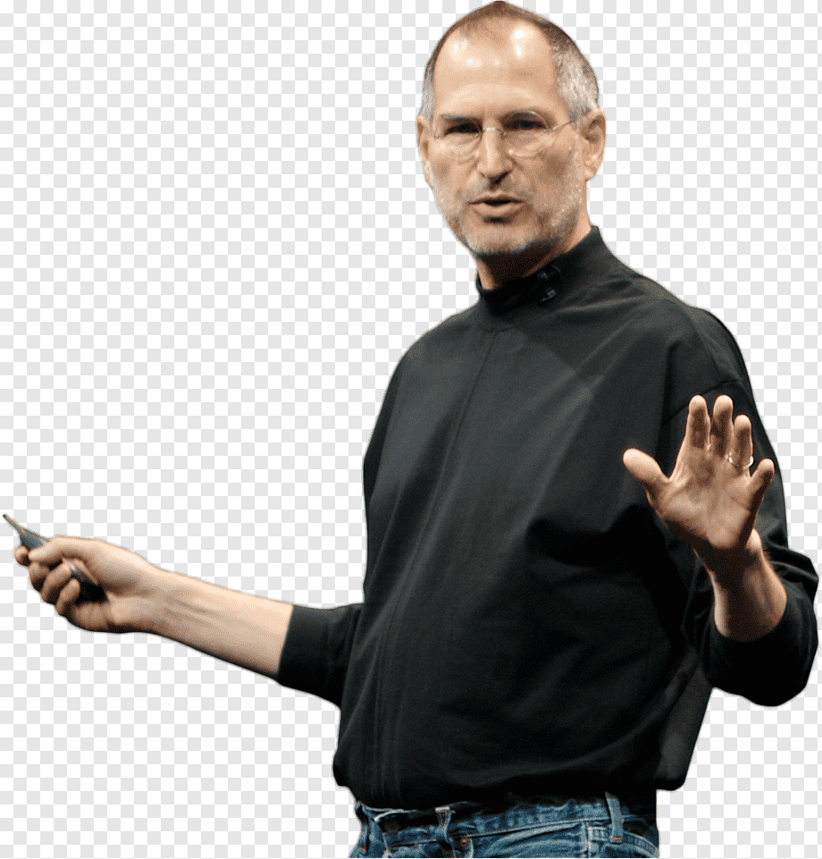

Steve Jobs was born on February 24, 1955 in San Fransisco, Caliifornia. Jobs was born to Joanne Schieble (later Joanne Simpson) and Abdulfattah "John" Jandali, two University of Wisconsin graduate students. The couple gave up their unnamed son for adoption so Jobs was raised by adoptive parents in Cupertino, California, located in what is now known as Silicon Valley. It was not until Jobs was 27 that he was able to uncover information on his biological parents.As an infant, Jobs was adopted by Clara and Paul Jobs and named Steven Paul Jobs. Clara worked as an accountant and Paul was a Coast Guard veteran and machinist.

Jobs was intrested in technology scince he was little but Jobs was a prankster in elementary school due to boredom, and his fourth-grade teacher needed to bribe him to study. As a boy, Jobs and his father worked on electronics in the family garage. Paul showed his son how to take apart and reconstruct electronics, a hobby that instilled confidence, tenacity and mechanical prowess in young Jobs. Jobs tested so well at school, however, that administrators wanted to skip him ahead to high school, a proposal that his parents declined. In hsh In high school Jobs met Steve wazniak. Later Jobs was dropped out of college but still continued learning.
Allthe versions of imacs and macs from 1976 to 2008 (Apple I — 1976 Apple II — 1977 Apple III — 1980 Apple Lisa — 1983 Macintosh 128K and 512K — 1984 Apple Lisa II — 1984 Macintosh XL — 1985 Macintosh Plus — 1986 Macintosh SE — 1987 Macintosh II — 1987 Macintosh Portable — 1989 Macintosh LC — 1990 Macintosh Classic — 1990 Macintosh Quadra — 1991 PowerBook — 1991 Macintosh Performa — 1992 Power Macintosh — 1995 Twentieth Anniversary Macintosh — 1997 iMac — 1998 iBook — 1999 eMac — 2002 Mac mini — 2005 MacBook — 2006 MacBook Pro — 2006 MacBook Air — 2008
Bill gates worked Jobs but later they had an argument and they wre sepated. Bill gates later on built windows. In 1976 Jobs and Waznaik started apple computers from the jobs family garage. On April 1, 1976, Apple Computer Company was founded by Steve Jobs, Steve Wozniak, and Ronald Wayne. After 12 days Ronald Wayne sold his 10% for stake in apple for $800 which would be worth billions today.
The apple I(1) didn't sell well becuase it wasn't a very functional computer but the aplle II (2) sold very well becauseof it's design. Apple wentpublic on December 12, 1980 with a value of 1.2billion dollors.
In 1976, when Jobs was just 21, he and Wozniak started Apple Computer in the Jobs’ family garage. They funded their entrepreneurial venture by Jobs selling his Volkswagen bus and Wozniak selling his beloved scientific calculator. Jobs and Wozniak are credited with revolutionizing the computer industry with Apple by democratizing the technology and making machines smaller, cheaper, intuitive and accessible to everyday consumers.
Wozniak conceived of a series of user-friendly personal computers, and, with Jobs in charge of marketing, Apple initially marketed the computers for $666.66 each. The Apple I earned the corporation around $774,000. Three years after the release of Apple's second model, the Apple II, the company's sales increased by 700 percent to $139 million.
The next several products from Apple suffered significant design flaws, however, resulting in recalls and consumer disappointment. IBM suddenly surpassed Apple in sales, and Apple had to compete with an IBM/PC-dominated business world.But despite positive sales and performance superior to IBM's PCs, the Macintosh was still not IBM-compatible.
Sculley believed Jobs was hurting Apple, and the company's executives began to phase him out. Not actually having had an official title with the company he co-founded, Jobs was pushed into a more marginalized position and thus left Apple in 1985.After leaving Apple in 1985, Jobs began a new hardware and software enterprise called NeXT, Inc.
The company floundered in its attempts to sell its specialized operating system to mainstream America, and Apple eventually bought the company in 1996 for $429 million.In 1997, Jobs returned to his post as Apple's CEO. Just as Jobs instigated Apple's success in the 1970s, he is credited with revitalizing the company in the 1990s.
With a new management team, altered stock options and a self-imposed annual salary of $1 a year, Jobs put Apple back on track. Jobs’ ingenious products (like the iMac), effective branding campaigns and stylish designs caught the attention of consumers once again.
All the versionsof ipod(IPOD (FIRST GENERATION) [2001], IPOD (THIRD GENERATION) [2003], IPOD MINI [2004]IPOD (FOURTH GENERATION) [2004]IPOD (U2 EDITION) [2004]IPOD SHUFFLE (FIRST GENERATION) [2005]IPOD NANO (FIRST GENERATION) [2005] IPOD (FIFTH GENERATION) [2005]POD TOUCH (FIRST GENERATION) [2007]IPOD CLASSIC [2007]IPOD NANO (FIFTH GENERATION) [2009]IPOD SHUFFLE (FOURTH GENERATION) [2010]IPOD NANO (SEVENTH GENERATION) [2012]IPOD NANO (SEVENTH GENERATION) [2012]
The iPod, Apple's hard disk-based digital audio player, was introduced by Steve Jobs on October 23, 2001. “'With iPod, Apple has invented a whole new category of digital music player that lets you put your entire music collection in your pocket and listen to it wherever you go,' said Steve Jobs.
With the introduction of the sleek little iPod, a $399 personal digital-music player, Steve has finally built a widget. About the size of a pack of cigarettes, the iPod is more than just a portable sound machine, however. It’s a new kind of gadget that has the potential to change how we think about personal audio-entertainment gizmos, much as Sony’s first pocket-sized transistor radio did in 1958, and the Sony Walkman portable stereo tape player did 20 years later. The progeny of an eight-month crash-development project, the iPod also vividly illustrates how Apple’s engineering and software skills could make it a force to be reckoned with in the consumer electronics business long dominated by leviathans like Sony and Matsushita.
Steve Jobs noticed something earlier this year in New York City. ‘I was on Madison,’ says Apple’s CEO, ‘and it was, like, on every block, there was someone with white headphones, and I thought, Oh, my God, it’s starting to happen.’ Jonathan Ive, the company’s design guru, had a similar experience in London: ‘On the streets and coming out of the tubes, you’d see people fiddling with it.’ And Victor Katch, a 59-year-old professor of kinesiology at the University of Michigan, saw it in Ann Arbor. ‘When you walk across campus, the ratio seems as high as 2 out of 3 people,’ he says.
They’re talking about the sudden ubiquity of the iPod, the cigarette-box-size digital music player (and its colorful credit-card-size little sister, the Mini) that’s smacked right into the sweet spot where a consumer product becomes something much, much more: an icon, a pet, a status indicator and an indispensable part of one’s life. To 3 million-plus owners, iPods not only give constant access to their entire collection of songs and CDs, but membership into an implicit society that’s transforming the way music will be consumed in the future.
“Amid all the new products it introduced on Tuesday, Apple also quietly but officially retired the iPod classic. This was more than a little ironic, considering U2’s appearance alongside Tim Cook with a splashy new Apple video that recalled the iPod silhouettes campaign from the mid-2000s. Indeed, the U2 ad feels like an homage to what is still one of the most successful consumer electronics products ever (which also came in a U2 edition).
Although the end of the iPod classic hardly comes as a surprise — Mashable’s Lance Ulanoff wrote a eulogy for the device back in January — we can’t help but greet the reality that Apple has retired its hard disk-based MP3 player lineup with a twinge of sadness.
Sure, the iPod nano, iPod touch and iPod shuffle still exist. But for many of us, the traditional iPod still holds a special place in our heart. It’s not a stretch to say that without the original iPod, Apple as we know it would not exist.
all the versions of iphone ( iphone 2G,3G,3Gs,4,4s that he intoduced)
Jobs didn't like how phones design looked and they weren't capibile of much, his friends too.
He was considered to be the master of tech presentations, but most people agree that Steve Jobs’ greatest presentation perhaps was that of the iPhone. On January 9, 2007, Jobs introduced the world to a new kind of phone, a phone that would do to smartphones what the Macintosh had done to personal computers in 1984 – literally change how we used them, even while making them far easier to use. Of course, like the Macintosh in 1984, the iPhone was not a perfect device. It had its share of flaws.
Jobs highlighted how the mouse had changed how we used computers in the Macintosh. But of course, using a mouse with a phone was not an option as no one wanted to carry a mouse around. Jobs considered the alternatives:
“So what are we gonna do? Oh, a stylus, right? We’re gonna use a stylus. No. No. Who wants a stylus? You have to get em and put em away, and you lose em. Yuck. Nobody wants a stylus. So let’s not use a stylus.” He then introduced us to what he called the best pointing device in the world.
“We’re gonna use the best pointing device in the world. We’re gonna use a pointing device that we’re all born with – we’re born with ten of them. We’re gonna use our fingers. We’re gonna touch this with our fingers.” And then he introduced a new word to our vocabulary – multi-touch
But just as the Macintosh in 1984, the iPhone rose above its shortcomings thanks to its inherent strengths. What it did was far more important and impactful than what it did not. And a major reason that people noticed what it did was Jobs’ masterly presentation. So, as the iPhone completes 14 years of being in the spotlight
In 2007, Mr. Jobs took the stage at the Moscone Convention Center in San Francisco and introduced the world to the iPhone. If you watch the full speech, you’ll be surprised by how he imagined our relationship with this iconic invention, because this vision is so different from the way most of us use these devices now.In the remarks, after discussing the phone’s interface and hardware, he spends an extended amount of time demonstrating how the device leverages the touch screen before detailing the many ways Apple engineers improved the age-old process of making phone calls. “It’s the best iPod we’ve ever made,” Mr. Jobs exclaims at one point. “The killer app is making calls,” he later adds. Both lines spark thunderous applause. He doesn’t dedicate any significant time to discussing the phone’s internet connectivity features until more than 30 minutes into the address.
The presentation confirms that Mr. Jobs envisioned a simpler and more constrained iPhone experience than the one we actually have over a decade later. For example, he doesn’t focus much on apps. When the iPhone was first introduced there was no App Store, and this was by design. As Andy Grignon, an original member of the iPhone team, told me when I was researching this topic, Mr. Jobs didn’t trust third-party developers to offer the same level of aesthetically pleasing and stable experiences that Apple programmers could produce. He was convinced that the phone’s carefully designed native features were enough. It was “an iPod that made phone calls,” Mr. Grignon said to me.
The first iPhone saw release in 2007 with a fairly barebones selection of apps, none of which were made by outside developers. That changed when Apple opened the gates to developers a year later with iPhone OS 2.0, invigorating a sector and forever changing what it meant to be an "Apple developer.
The App Store officially launched on July 10, 2008, after it was announced the previous fall; the first software development kit was released in February of 2008.
The App Store has not only grown exponentially in its ten years of existence, but it's also been at the forefront of all sorts of innovations in technology, culture and entertainment over the course of the decade.
All that, and Apple co-founder Steve Jobs was reportedly resistant to the idea at first.
obs wrote in a letter that October. "We are excited about creating a vibrant third party developer community around the iPhone and enabling hundreds of new applications for our users."
Apple also announced that developers could set the price of their own apps — including free — with the devs keeping 70 percent of sales revenues.
Shortly after the iPhone 3G was released, the App Store officially came online on July 10, 2008. There were 500 apps available at launch.
The store was a hit with consumers almost immediately, as it was easy to use and figure out even for less-tech-savvy customers, and it brought life-changing technologies in all sorts of realms. By early 2009, Apple had released a memorable TV commercial that introduced the phrase "there's an app for that".
Indeed, the App Store very soon after its launch changed life for its users in all sorts of ways, providing them with apps for fitness, gaming, navigation, book-reading, e-commerce and much more. The live-streaming revolution, with Netflix leading the way, was made possible by App Store apps. And thanks to Tinder and other geolocation-based apps, dating was never the same again.
Changes would come to the Store as time went on. When the iPad and later the Apple Watch came along, apps were part of those as well. Apple introduced in-app subscriptions for the first time in 2011.
There were 500 apps available at the time of launch, a number that would grow to 3,000 by that September and 15,000 by the following January. The growth was exponential in the ensuing years, as the App Store hit 1 million apps in the fall of 2013, and reportedly reached 2 million earlier this year.
Just as the iPhone has grown from a product that didn't exist 11 years ago to something that's a ubiquitous part of life in the 21st century, apps are now an indisputable part of most people's everyday existence.
al the versions that he introduced(ipad)
The foundation of Jobs’s iPad pitch was counterintuitive. Most don’t buy a laptop for the heavy office tasks they were originally designed for. They use it mostly to communicate. What the world needed was a device that combined the best of both -- “more intimate than a laptop, and so much more capable than a smartphone”. A picture of the iPad dropped nicely into place between the iPhone and the Macbook.
If Google was going to try to win the mobile-platform war on breadth, Jobs was going to win it on depth.But he’d clearly reconsidered this. If Google was going to try to win the mobile-platform war on breadth, Jobs was going to win it on depth. All then-Android chief Andy Rubin had to do to expand Android was to get it on more and more machines; like Bill Gates with Windows, Rubin didn’t care which products were hits and which were not as long as in the aggregate the Android platform was growing. For Jobs to make Apple’s strategy work – to grow the iOS platform vertically – he needed to hit it out of the park every time.
When executives inside and outside Apple wondered if Jobs was making the same mistake against Android that he made against Microsoft – if he was keeping his platform too rigid – it seemed that, if anything, Jobs was increasing its rigidity. Starting in 2010, Jobs had more and more Apple products assembled with special screws to make it difficult for anyone with typical screwdriver heads to open the cases of his machines. (It seemed like a small thing, but to those inside Silicon Valley its symbolism was large: One of Android’s pitches to consumers was the flexibility of the software and the devices.
Today, when most people hear the word ‘tablet,’ they immediately think ‘iPad.’ In fact, Apple has held such a dominate position for so long that it’s easy to forget what the tablet market looked like before the iPad’s release.
But that isn’t the case when it comes to smartphones. Although the iPhone has been very successful, Google was able to overtake Apple in smartphone marketshare back in 2010, and today Android dominates the global market. So why did Google fail to replicate their smartphone success with tablets? Now before we get into the reasons why Android tablets failed to gain much traction among customers, we need to understand what the tablet market looked like before the iPad was around.
Because tech companies had different ideas of what a tablet should be and how it should function. And it was these different approaches to tablets that determined which companies succeeded, and which struggled. So one of the biggest players in the tablet market beginning in 2003 was Microsoft with what they called the Microsoft Tablet PC.It ran a slightly modified version of the Windows operating system, which allowed for input from a stylus rather than a keyboard and mouse. Now as you can see, these tablet PCs were clunky, at about an inch thick, heavy, at about 3 to 4 pounds, and suffered from poor battery life, delivering about 4 to 5 hours of use. And to make matters even worse,these Microsoft Tablet PCs had an average price tag of about $2,000. Which made them significantly more expensive than their notebook computer equivalent.So as you may’ve guessed, these tablets never had much commercial success.
But this didn’t stop Apple users from wanting their own version of these tablet computers. In fact, some third party companies like Axiotron took matters into their own hands and created Macintosh tablet computers themselves. But these devices were based on the same approach Microsoft took to tablet PCs. The idea that tablets should run a desktop-computer OS designed for a mouse. And this created some innate challenges. In order to run Windows or MacOS on a tablet, you’d need the precision of a cursor. Which is why you had to use a stylus rather than your fingers. Also, the tablet needs all the hardware of a desktop computer. It needs a desktop-grade processor, GPU, and cooling system. All of which come at the detriment of battery life.
So as Apple began developing on their own version of the tablet, it became clear they needed to take a different approach. Instead using Mac OS, they’d give their tablet iOS, a mobile operating system already used on the iPhone. And this was a good decision for a few reasons.
iOS was power efficient which would allow for all-day battery life, it featured multitouch which eliminated the need for a stylus, and it could run on Apple’s low-power A4 system-on-a-chip, which allowed for a compact, thin, and light design. Not to mention how much cheaper this tablet would be to produce than a traditional desktop computer. That’s part of the reason why tech analysts were shocked when Apple announced the iPad’s starting price of $500, about half of what most people were predicting.
Now it wasn’t long before the iPad proved to be a huge hit, which prompted other tech companies to create similar devices that ran Google’s Android OS. And the following year in 2011, the market was flooded with Android tablets.
“Tablets absolutely stole the show at CES 2011. Just about every company had one. While the idea of a tablet may sound exciting, the majority of these were unfortunately poorly put together Android tablets.” “It felt as though some companies had merely glued a screen, a battery back, a processor, and some memory together and loaded Android onto it thinking it would sell. Aside from a few brand-name tablets, the majority on the show floor were still running Android 2.0, 2.1, or 2.2. While those versions of Android aren’t necessarily bad,the OS was built for a phone”
So right from the beginning, the majority of Android tablets were delivering poor functionality and performance. It was clear that manufacturers were rushing products to market to try and steal as much of the iPads thunder as possible. But these manufacturers didn’t understand what made the iPad so desirable in the first place.
Because if you remember back to the iPads introduction, Steve Jobs made it very clear that while the iPad had fantastic hardware,it was the software that would define the user experience. And while apps made for then iPhone could run on the iPad and be scaled up, Scott Forstall told developers that they should modify their apps and rewrite the interface in order to take advantage of the iPads larger display.
Similar to what Apple did with their Photos, Music, Calendar, and YouTube apps. So in order to encourage developers to rewrite their applications, Apple created an iPad Software Development Kit that was released the same day as the iPad’s introduction.
A very strategic move by Apple that gave developers over two months to prepare iPad-optimized versions of their apps. That way, when the very first iPad was sold, there would already be a marketplace of high-quality iPad apps available for download.And that brings me to one of the biggest reasons why Android tablets failed.
They started off running a smartphone operating system with apps that weren’t optimized for a tablet’s larger display. In fact, many of these early Android tablets didn’t even have access to Google Marketplace to download third party apps. Google was working on an operating system called Honeycomb which was optimized for tablets, but manufacturers wanted to bring their devices to market as soon as possible, and didn’t want to wait on Google to finish their work on Honeycomb.
This resulted in what I mentioned earlier, hundreds of cheap Android tablets running a smartphone operating system that resulted in a poor user experience. This created nothing but confusion and frustration for customers, and severely damaged the reputation of Android tablets right off the bat.
It’s a story that we’ve heard before with MP3 players and the iPod. There were hundreds of MP3 players on the market trying to compete with the iPod, but none of them were able to gain any traction. Mainly because of their poor build quality, software, and user interface.Despite being a fraction of the cost, most customers shopping for a music player ignored these MP3 players and instead opted for the iPod. And there were a few reasons for this that may sound familiar. Everyone knew what the iPod was. And most people who didn’t own one probably had friends or family members who did.
They likely used the device for themselves before purchasing and was satisfied with the experience. Perhaps they’d like to save money by buying a cheaper MP3 player, but they understood that no other device would deliver the same experience as the iPod. And many people learned this for themselves by purchasing a generic MP3 player, becoming frustrated by its complexity or poor functionality,and leaving it in the junk drawer never to be used again. Which is very similar to what happened with Android tablets.
But this is only one piece of the puzzle, because a recurring challenge with Android is device fragmentation. It’s a problem when it comes to their smartphones, but it’s an even bigger problem with their tablets. Because all the iPad’s advantages could only be achieved with Apple’s end-to-end control over hardware, software, and the app store. When it came to Android, things were much less organized.
How can a developer optimize an app for hundreds of different devices with display sizes that range from seven to thirteen inches? And how can apps run efficiently when there are dozens of different processors and chipsets they need to be compatible with? To put it plainly, it’s a nightmare to develop applications for Android tablets. And considering the small install base, it simply isn’t worth many developers time and effort to rewritetheir smartphone apps for tablets. And it causes what I call the “developer deterrent” problem.
You see, Android tablets have never sold well historically, so there isn’t a very large user base. This means developers aren’t motivated to create custom designed apps for those devices. Instead, existing smartphone apps are simply stretched to fillthe tablet’s larger display, rather than being truly optimized to take advantage of the extra screen real estate. This issue is slowly improving, but it’s part of the reason why the app ecosystem on Android tablets has always been underwhelming, and this discouragespeople from buying them.
So you can see the vicious cycle that forms: People aren’t buying Android tablets since their apps aren’t optimized, and developers aren’t optimizing apps for Android tablets because of the small user base. And when you consider the fact that Apple users spend twice as much money on apps than Android users, it’s easy to understand why developers invest more time and effort creating high quality apps for iPads.
Now Google eventually released their Honeycomb 3.0 operating system which was designed for devices with larger displays. But it was extremely buggy and difficult to navigate, unlike the straightforward interface of the iPad. It was clear that Google was trying to deliver a tablet OS as quickly as possible to compete with Apple, but in the process missed the mark completely.
Focusing on creating a more traditional desktop computer interface rather than investing resources in the features that mattered most to users. Like a large ecosystem with apps optimized for the devices they owned. And ever since that Honeycomb release, Google has proved that they don’t understand what it takes to create a successful Android tablet.
In 2012 they released the Nexus 7, which was what they thought buyers wanted. A cheap mini tablet that included Google Wallet, Near Field Communication, and their voice assistant Google. But the device was poorly built plagued with bugs that rendered it useless for most users after just one year.
In 2014 Google flipped their strategy on its head and released the Nexus 9. A more premium tablet similar to the iPad mini whose selling point was the NVIDIA "Denver" Tegra K1 chip.It was supposed to be one of the only chipsets to give the iPad a run for its money, but it ended up falling behind the iPad Air 2’s A8X.
Plus, Google’s tablets were still suffering from unoptimized apps that didn’t deliver the same full-featured experience as the iPad.
The Nexus 9 was discontinued about 18 months later as Google shifted their strategy yet again. They introduced the Pixel C near the end of 2015 which looked to challenge Apple’s iPad Air 2. But despite adopting some of the same features and design cues as the iPad Air, the Pixel C was plagued by Android’s poor support for tablet hardware and a tiny app ecosystem that paled in comparison to the iPad’s App Store.
In June of 2019 Google stopped development and production of all their tablets and confirmed they’d no longer be making those devices. Instead, Google would be investing their resources in notebook computers.
So while Android has experienced tremendous success on smartphones, it hasn’t been able to overcome the fragmentation, poor app ecosystem, and underwhelming performance that has plagued the platform since the very first Android tablets were released in 2011.